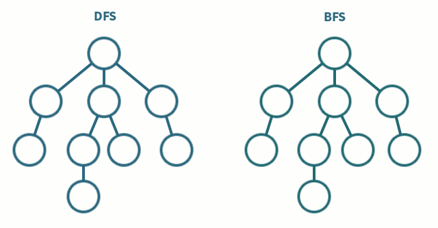

29 Janvier 2026
Lien vers l’exercice CodingGame

maze solving.gifCe projet porte sur le puzzle The Other Side, de CodingGame.
Le problème est le suivant : on dispose d’une grille de h
lignes et w colonnes, composée uniquement de caractères
+ et #. L’objectif est de compter combien de
cellules + situées dans la colonne la plus à gauche
permettent d’atteindre la colonne la plus à droite, en se déplaçant de
case en case (horizontalement ou verticalement), et en ne passant que
par des cellules +.
Le BFS (parcours en largeur) explore une grille case par case en
s’éloignant progressivement du point de départ, comme une vague qui se
propage. On va l’utiliser ici car il est simple à implémenter et permet
de ne pas tourner en rond grâce à la grille visite.
Afin de résoudre ce problème, on suivra l’algorithme suivant :
h lignes et w
colonnes.+, lancer un BFS depuis cette
case.visite vierge et y marquer le
point de départ.+ non visitées.Voirle fichier otherside_iter.py
import sys
h = int(input())
w = int(input())
# Lecture brute : chaque ligne est une chaîne "+ # + +", les cases utiles sont aux indices pairs
grille = []
for i in range(h):
ligne = input()
grille.append(ligne)
count = 0
directions = [(-1, 0), (1, 0), (0, -1), (0, 1)] # haut, bas, gauche, droite
for i in range(h):
if grille[i][0] == '+': # on ne part que des '+' de la colonne gauche
file = [(i, 0)]
# Grille de cases visitées, réinitialisée à chaque nouveau point de départ
visite = []
for r in range(h):
visite.append([False] * w)
visite[i][0] = True
trouve = False
j = 0 # index de lecture dans la file évite un pop(0) coûteux
while j < len(file) and not trouve:
ligne, col = file[j]
j += 1
if col == w - 1: # dernière colonne atteinte : chemin trouvé
trouve = True
else:
for dl, dc in directions:
nl, nc = ligne + dl, col + dc
if 0 <= nl < h and 0 <= nc < w:
# nc*2 car la colonne logique nc est à l'indice nc*2 dans la chaîne brute
if grille[nl][nc*2] == '+' and not visite[nl][nc]:
visite[nl][nc] = True
file.append((nl, nc))
if trouve:
count += 1
print(count)Voir le fichier otherside_recur.py
h = int(input())
w = int(input())
# Lecture brute : même principe que la version itérative
grille = []
for i in range(h):
ligne = input()
grille.append(ligne)
directions = [(-1, 0), (1, 0), (0, -1), (0, 1)] # haut, bas, gauche, droite
def dfs(ligne, col, visite):
if col == w - 1: # cas de base : on a atteint la dernière colonne
return True
for dl, dc in directions:
nl, nc = ligne + dl, col + dc
if 0 <= nl < h and 0 <= nc < w:
# nc*2 car la colonne logique nc est à l'indice nc*2 dans la chaîne brute
if grille[nl][nc*2] == '+' and not visite[nl][nc]:
visite[nl][nc] = True
if dfs(nl, nc, visite): # on remonte dès qu'un chemin est trouvé
return True
return False # aucun voisin n'a mené à la droite
count = 0
for i in range(h):
if grille[i][0] == '+': # on ne part que des '+' de la colonne gauche
# Grille de cases visitées, réinitialisée à chaque nouveau point de départ
visite = []
for r in range(h):
visite.append([False] * w)
visite[i][0] = True
if dfs(i, 0, visite):
count += 1
print(count)La version récursive est directement copiée de la version itérative. Au lieu d’ajouter les voisins dans une file et d’avancer avec un index , on appelle la fonction elle-même. On passe ainsi d’un BFS à un DFS sans trop changer l’algo.
def dfs(ligne, col, visite):
if col == w - 1: # cas de base : on a atteint la droite
return True
for dl, dc in directions:
nl, nc = ligne + dl, col + dc
if 0 <= nl < h and 0 <= nc < w:
if grille[nl][nc*2] == '+' and not visite[nl][nc]:
visite[nl][nc] = True
if dfs(nl, nc, visite): # si un chemin est trouvé plus loin...
return True # ...on remonte immédiatement
return False # aucun voisin n'a mené à la droiteLa différence clé avec le BFS c’est que le DFS va dans la première branche venue avant d’essayer les autres.
for i in range(h):
if grille[i][0] == '+':
visite = []
for r in range(h):
visite.append([False] * w)
visite[i][0] = True
if dfs(i, 0, visite):
count += 1
print(count)La boucle principale est identique à la version itérative : on repart
d’une grille visite vierge pour chaque point de départ.
Pour la grille suivante (h=4, w=4) :
+ # + +
+ + + #
# # + +
+ # # #Le programme affiche 2 : les + des lignes 0
et 1 atteignent la colonne droite, celui de la ligne 3 est isolé.
Voir la solution de CarlWash sur CodingGame
h, w = int(input()), int(input())
grid = {complex(x, y) for y in range(h) for x, c in enumerate(input().split()) if c == '+'}
seen = set()
def dfs(p):
if p in seen or p not in grid: return
seen.add(p)
for i in range(4):
dfs(p + 1j**i)
for y in range(h): dfs(complex(w-1, y))
print(sum(complex(0, y) in seen for y in range(h)))Ici même DFS que ma version récursive, mais trois différences notables.
La grille est stockée comme un ensemble de nombres complexes : chaque
+ devient complex(x, y). Tester si une case
est valide se fait alors avec p in grid en O(1).
Les directions sont faites avec 1j**i, car multiplier
par j revient à une rotation de 90 degrès (pas le genre de
truc qu’on pense tout de suite à faire).
La différence la plus intéressante algorithmiquement, c’est le sens
du parcours, ici ilpart de la colonne droite et fait un seul
DFS pour marquer tout ce qui est atteignable dans
seen. Il faut juste ensuite compter les cases de la colonne
gauche présentes dans seen.
Cet exercice était une bonne introduction aux algorithmes de parcours de graphe. Le BFS et le DFS sur grille, c’est quelque chose qu’on avait deja aborder en cours de terminal.
Je n’ai pas spécialment appris de nouvelles choses en terme de python pur. Ce qui m’a le plus appris, c’est la solution de CarlWash avec l’idée de partir de la droite plutôt que de la gauche, et l’utilisation de nomnbre complexes.